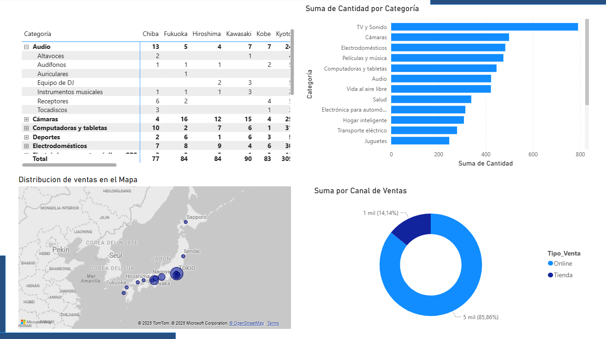

Analisis de empresa ficticia de venta de articulos electronicos (Pamasonic)
Tecnologías Utilizadas: Power Bi (Power Query), Excel.
Pamasonic, una empresa dedicada a la comercialización minorista de artículos electrónicos y electrodomésticos.
El gerente general de la empresa,solicita un análisis de las ventas de los últimos 3 años. El objetivo es entender cómo han evolucionado las ventas y qué factores pueden estar influyendo en su comportamiento.
1. Por un lado al gerente le interesa ver las ventas totales, y su tendencia a lo largo del tiempo, así como su distribución en los canales de venta (tiendas físicas u online), y conocer geográficamente, dónde se concentran sus clientes.
2. Por otro lado, le interesa ver cómo se comparan las diferentes categorías de productos entre sí, respecto a la cantidad de unidades vendidas.
Fuente de Datos: Archivo CSV obtenido de Kaggle
Metodología y Proceso
- Limpieza y Transformación de Datos: Manejé valores faltantes, corregí formatos y uní tablas, con la ayuda de power query y excel.
- Análisis Exploratorio de Datos (EDA):Explore la evolucion de las ventas en el tiempo para observar tendencias o estacionalidad y distribucion de las ventas usando las visualizaciones mas adecuadas.
- Visualización de Datos:Primero cree un dashboard para las visualizaciones enfocadas en los canales de ventas, como graficos de anillos, lineas y mapa, agregando un segmentador para su control y una tarjeta informativa. En el segundo dashboard me enfoque en los productos, creando visualizaciones adecuadas para los mismos como grafico de barras agrupadas, con segmentador de categoria y ciudad.
Visualizaciones / Dashboard
Vista principal

vista enfocada en los productos
Insights y Conclusiones
El gráfico de "Suma de Cantidad por Tipo de venta" muestra que las ventas online (5 mil unidades) superan masivamente a las ventas en tienda física (1 mil unidades). Esto sugiere que el canal online es aproximadamente 5 veces más importante en términos de volumen de ventas que el canal físico.
Las ciudades con mayor volumen de ventas (representadas por círculos más grandes) son Tokio, seguida por Osaka y Nagoya.
La evolución de las ventas muestran un patron de ascenso de las mismas a partir de julio y que los productos de mayor volumen de ventas son los Altavoces y AUdifonos.
La estrategia de la empresa debería estar fuertemente orientada y optimizada para el canal digital.
Preguntas Estratégicas que Surgen:
¿Por qué el canal físico tiene un rendimiento tan bajo en comparación con el online? ¿Hay oportunidades para mejorarlo o se debería considerar reducir la inversión en él?
¿A qué se deben las fluctuaciones en las ventas trimestrales/semestrales? ¿Están relacionadas con campañas de marketing, problemas de stock, factores económicos o estacionalidad?